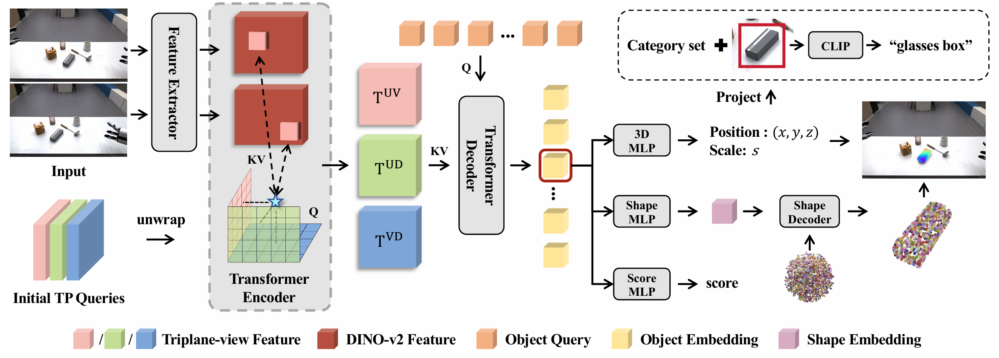
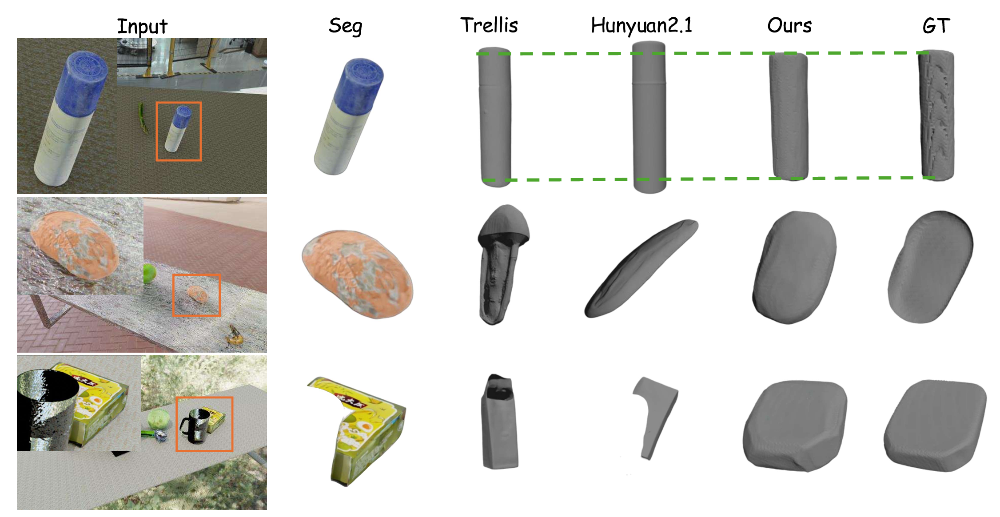
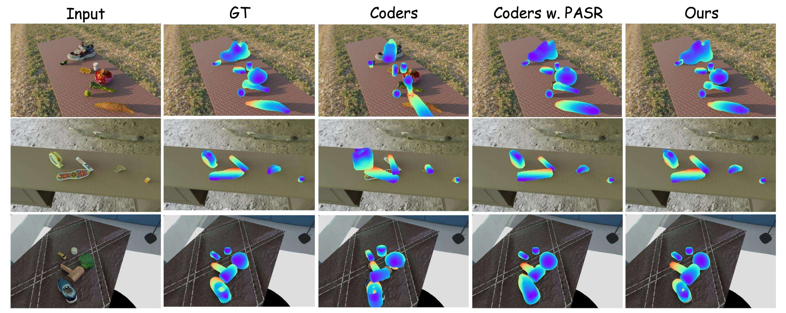

TL;DR
Abstract
Perceiving and reconstructing objects from images are critical for real-to-sim transfer tasks, which are widely used in the robotics community. Existing methods rely on multiple submodules such as detection, segmentation, shape reconstruction, and pose estimation to complete the pipeline. However, such modular pipelines suffer from inefficiency and cumulative error, as each stage operates on only partial or locally refined information while discarding global context. To address these limitations, we propose UniPR, the first end-to-end object-level real-to-sim perception and reconstruction framework. Operating directly on a single stereo image pair, UniPR leverages geometric constraints to resolve the scale ambiguity. We introduce Pose-Aware Shape Representation to eliminate the need for per-category canonical definitions and to bridge the gap between reconstruction and pose estimation tasks. Furthermore, we construct a large-vocabulary stereo dataset, LVS6D, comprising over 6,300 objects, to facilitate large-scale research in this area. Extensive experiments demonstrate that UniPR reconstructs all objects in a scene in parallel within a single forward pass, achieving significant efficiency gains and preserves true physical proportions across diverse object types, highlighting its potential for practical robotic applications.
Architecture

Comparisons with the State-of-the-art
Qualitative shape reconstruction results compared with image-to-3D models:

Qualitative pose-aware shape reconstruction results on LVS6D dataset:
